Дом 120 м² в два этажа (демо LINEA)
Листов: 136 · блокеров: 0 · замечаний: 267
01-decorator-cover.svg — Титульный лист (decorator)

02-draftsman-general.svg — Общие данные (draftsman)

03-draftsman-general-2.svg — Общие данные (draftsman)

04-draftsman-general-3.svg — Общие данные (draftsman)

05-draftsman-general-4.svg — Общие данные (draftsman)

06-foreman-open-issues.svg — Открытые вопросы, принятые допущения и конфликты. Лист 1 из 2 (foreman)

07-foreman-open-issues-2.svg — Открытые вопросы, принятые допущения и конфликты. Лист 2 из 2 (foreman)
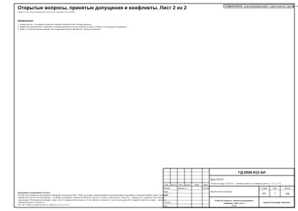
08-foreman-survey-task.svg — Задание на контрольный обмер и обследование. Лист 1 из 4 (foreman)
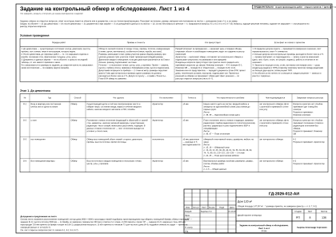
09-foreman-survey-task-2.svg — Задание на контрольный обмер и обследование. Лист 2 из 4 (foreman)
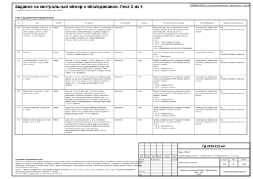
10-foreman-survey-task-3.svg — Задание на контрольный обмер и обследование. Лист 3 из 4 (foreman)
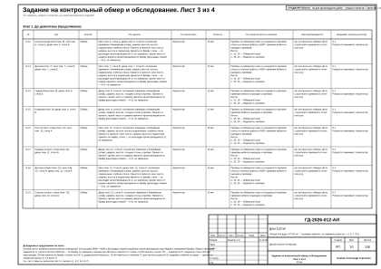
11-foreman-survey-task-4.svg — Задание на контрольный обмер и обследование. Лист 4 из 4 (foreman)
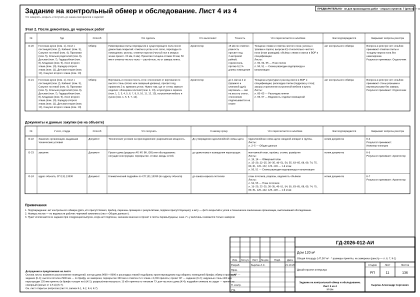
12-foreman-procurement.svg — График закупок и работ. Лист 1 из 3 (foreman)
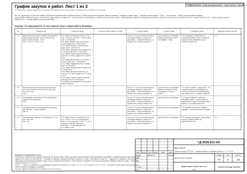
13-foreman-procurement-2.svg — График закупок и работ. Лист 2 из 3 (foreman)
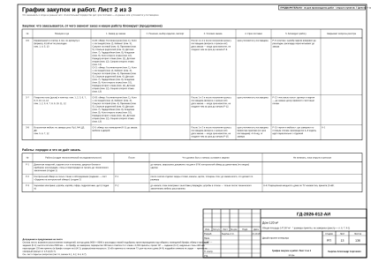
14-foreman-procurement-3.svg — График закупок и работ. Лист 3 из 3 (foreman)
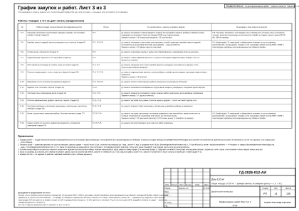
15-architect-obmer-et1.svg — Обмерный план · 1-й этаж (architect)
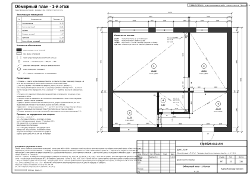
16-architect-obmer-et2.svg — Обмерный план · 2-й этаж (architect)
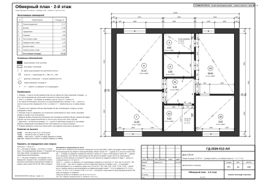
17-architect-demolition-et1.svg — План демонтажа и монтажа перегородок · 1-й этаж (architect)
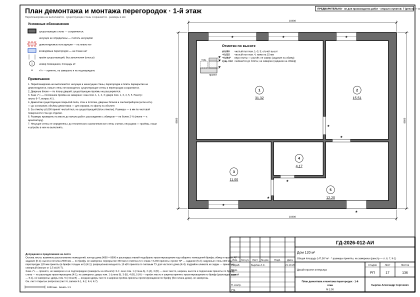
18-architect-demolition-et2.svg — План демонтажа и монтажа перегородок · 2-й этаж (architect)
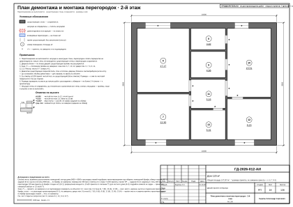
19-architect-doors-et1.svg — План дверей и ведомость заполнения проёмов · 1-й этаж (architect)
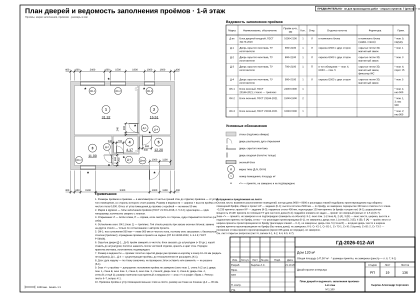
20-architect-doors-et2.svg — План дверей и ведомость заполнения проёмов · 2-й этаж (architect)
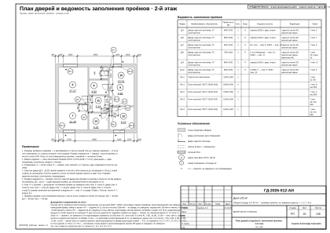
21-architect-stairs-л-1.svg — Лестница Л-1 (architect)
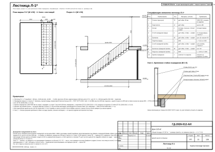
22-interior-designer-concept-et1.svg — Концепция интерьера · 1-й этаж (interior-designer)
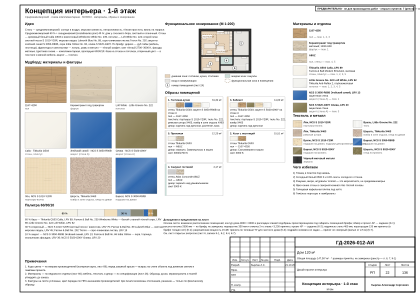
23-interior-designer-concept-et2.svg — Концепция интерьера · 2-й этаж (interior-designer)
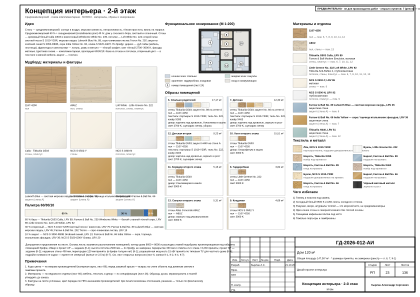
24-interior-designer-furniture-et1.svg — План расстановки мебели · 1-й этаж (interior-designer)
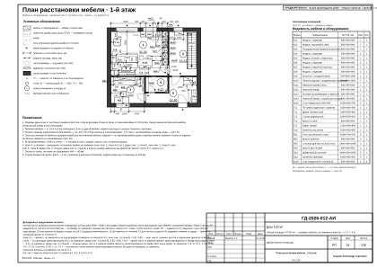
25-interior-designer-furniture-et2.svg — План расстановки мебели · 2-й этаж (interior-designer)
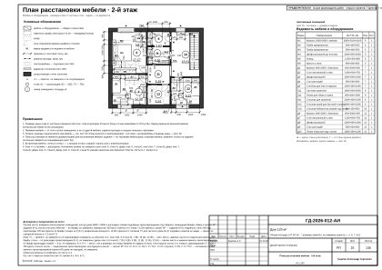
26-interior-designer-spec.svg — Спецификация мебели и оборудования (interior-designer)
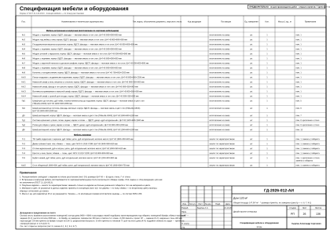
27-interior-designer-spec-2.svg — Спецификация мебели и оборудования (продолжение) (interior-designer)
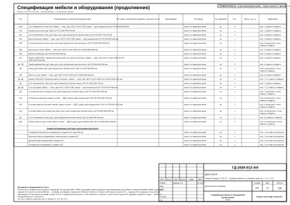
28-interior-designer-spec-3.svg — Спецификация мебели и оборудования (продолжение) (interior-designer)
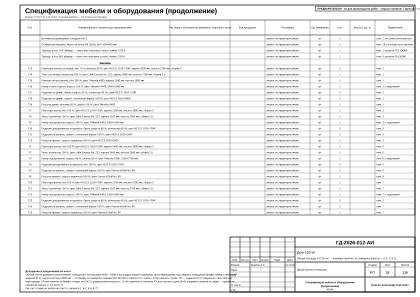
29-interior-designer-spec-4.svg — Спецификация мебели и оборудования (продолжение) (interior-designer)
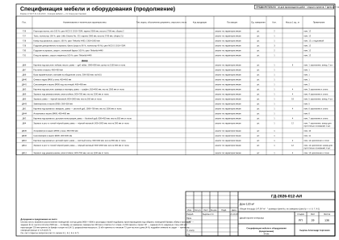
30-electrical-engineer-sockets-et1.svg — План розеток и электровыводов · 1-й этаж (electrical-engineer)
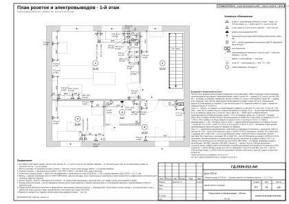
31-electrical-engineer-sockets-et2.svg — План розеток и электровыводов · 2-й этаж (electrical-engineer)
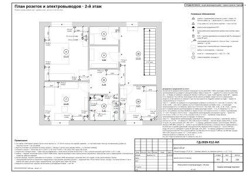
32-electrical-engineer-lighting-et1.svg — План освещения · 1-й этаж (electrical-engineer)
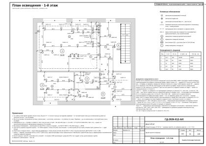
33-electrical-engineer-lighting-et2.svg — План освещения · 2-й этаж (electrical-engineer)
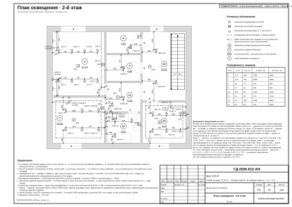
34-electrical-engineer-switches-et1.svg — План выключателей и схема включения · 1-й этаж (electrical-engineer)
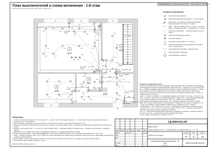
35-electrical-engineer-switches-et2.svg — План выключателей и схема включения · 2-й этаж (electrical-engineer)
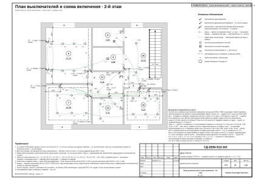
36-electrical-engineer-schedule.svg — Ведомость электроточек и изделий (electrical-engineer)
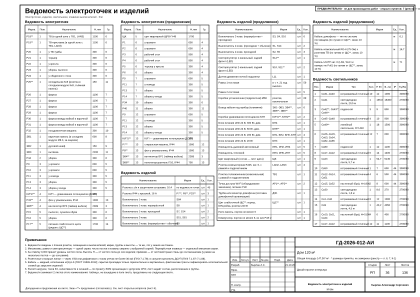
37-electrical-engineer-schedule-2.svg — Ведомость электроточек и изделий (продолжение) (electrical-engineer)
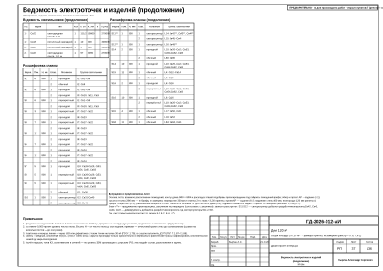
38-electrical-engineer-panel.svg — Однолинейная схема щита (electrical-engineer)
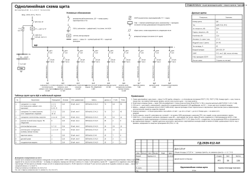
39-electrical-engineer-panel-2.svg — Однолинейная схема щита (продолжение) (electrical-engineer)
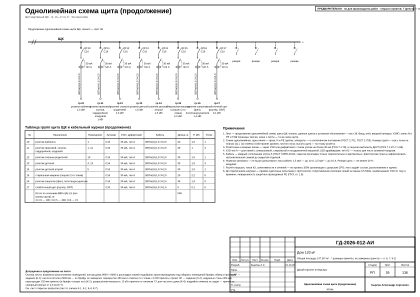
40-electrical-engineer-routing-et1.svg — План принципиальных трасс · 1-й этаж (electrical-engineer)
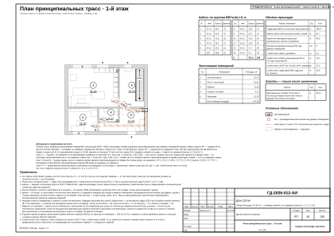
41-electrical-engineer-routing-et2.svg — План принципиальных трасс · 2-й этаж (electrical-engineer)
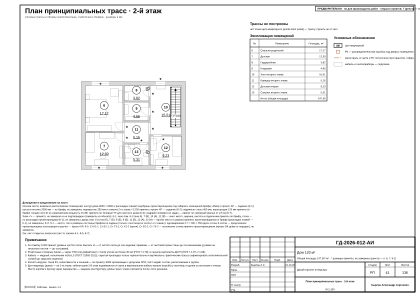
42-electrical-engineer-low-current-et1.svg — План слаботочных сетей · 1-й этаж (electrical-engineer)
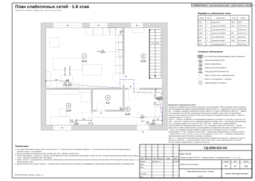
43-electrical-engineer-low-current-et2.svg — План слаботочных сетей · 2-й этаж (electrical-engineer)
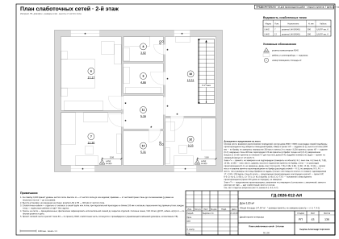
44-hvac-engineer-ventilation-et1.svg — План вентиляции · 1-й этаж (hvac-engineer)
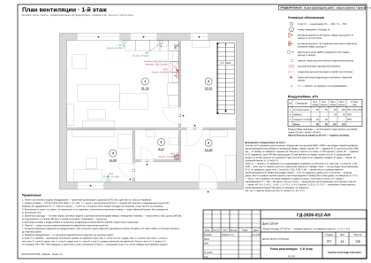
45-hvac-engineer-ventilation-et2.svg — План вентиляции · 2-й этаж (hvac-engineer)
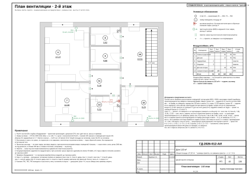
46-hvac-engineer-heating-et1.svg — План отопления · 1-й этаж (hvac-engineer)
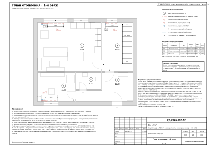
47-hvac-engineer-heating-et2.svg — План отопления · 2-й этаж (hvac-engineer)
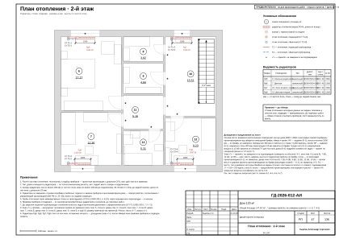
48-plumbing-engineer-vyvody-et1.svg — План выводов сантехники · 1-й этаж (plumbing-engineer)
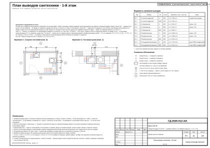
49-plumbing-engineer-vyvody-et2.svg — План выводов сантехники · 2-й этаж (plumbing-engineer)
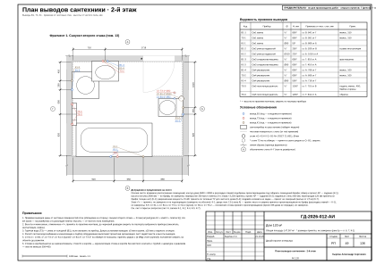
50-plumbing-engineer-razvodka-et1.svg — Схема разводки водопровода и канализации · 1-й этаж (plumbing-engineer)
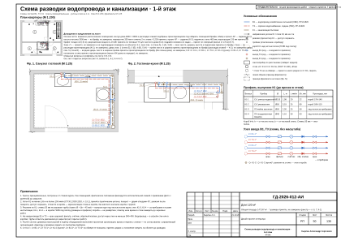
51-plumbing-engineer-razvodka-et2.svg — Схема разводки водопровода и канализации · 2-й этаж (plumbing-engineer)
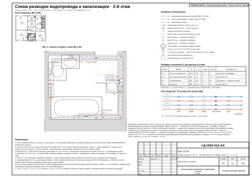
52-plumbing-engineer-spec-equipment.svg — Спецификация сантехнического оборудования (plumbing-engineer)
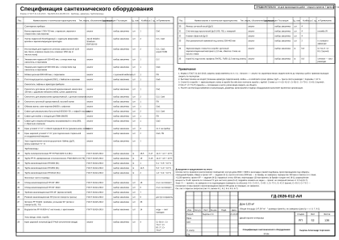
53-lighting-designer-lighting-spec.svg — Спецификация светильников и сценарии освещения (lighting-designer)
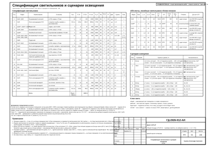
54-drywall-installer-ceiling-et1.svg — План потолков · 1-й этаж (drywall-installer)
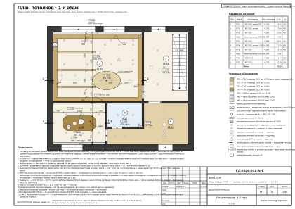
55-drywall-installer-ceiling-et2.svg — План потолков · 2-й этаж (drywall-installer)
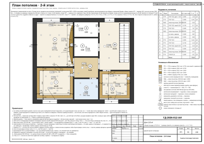
56-drywall-installer-ceiling-sections.svg — Разрезы и узлы потолков (drywall-installer)
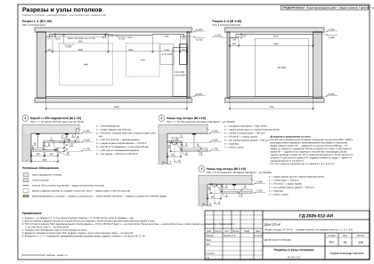
57-drywall-installer-ceiling-sections-2.svg — Разрезы и узлы потолков (продолжение) (drywall-installer)
58-drywall-installer-ceiling-sections-3.svg — Разрезы и узлы потолков (продолжение) (drywall-installer)
59-drywall-installer-ceiling-sections-4.svg — Разрезы и узлы потолков (продолжение) (drywall-installer)
60-tiler-tile-floors.svg — Раскладка плитки. Планы полов (tiler)
61-tiler-tile-extra.svg — Раскладка плитки. Прихожая. Фартук кухни (tiler)
62-tiler-tile-walls-r4.svg — Раскладка плитки. Санузел гостевой. Развёртки стен (tiler)
63-tiler-tile-walls-r13.svg — Раскладка плитки. Санузел второго этажа. Развёртки стен (tiler)
64-finisher-floors-et1.svg — План полов · 1-й этаж (finisher)
65-finisher-floors-et2.svg — План полов · 2-й этаж (finisher)
66-finisher-finish-schedule.svg — Ведомость отделки помещений. Лист 1 из 2 (finisher)
67-finisher-finish-schedule-2.svg — Ведомость отделки помещений. Лист 2 из 2 (finisher)
68-colorist-color-card-et1.svg — Колерная карта · 1-й этаж (colorist)
69-colorist-color-card-et2.svg — Колерная карта · 2-й этаж (colorist)
70-colorist-color-card-2.svg — Колерная карта (colorist)
71-colorist-materials-spec.svg — Спецификация отделочных материалов (colorist)
72-colorist-materials-spec-2.svg — Спецификация отделочных материалов (colorist)
73-decorator-decor-concept.svg — Концепция декора и визуализации (decorator)
74-decorator-decor-plan-et1.svg — План текстиля и декора · 1-й этаж (decorator)
75-decorator-decor-plan-et2.svg — План текстиля и декора · 2-й этаж (decorator)
76-decorator-curtains.svg — Шторы и карнизы (decorator)
77-decorator-textile-schedule.svg — Ведомость текстиля (decorator)
78-decorator-textile-schedule-2.svg — Ведомость текстиля (продолжение) (decorator)
79-decorator-decor-schedule.svg — Ведомость декора. Схемы развески (decorator)
80-furniture-maker-furn-plan-et1.svg — Встроенная мебель. Схема расположения · 1-й этаж (furniture-maker)
81-furniture-maker-furn-plan-et2.svg — Встроенная мебель. Схема расположения · 2-й этаж (furniture-maker)
82-furniture-maker-furn-pr1.svg — Шкаф-купе Пр1 (furniture-maker)
83-furniture-maker-furn-m4.svg — Шкаф распашной М4 (furniture-maker)
84-furniture-maker-furn-d3.svg — Шкаф распашной Д3 (furniture-maker)
85-furniture-maker-furn-gd1.svg — Система хранения Гд1 (furniture-maker)
86-furniture-maker-furn-gd2.svg — Система хранения Гд2 (furniture-maker)
87-furniture-maker-furn-kl1.svg — Система хранения Кл1 (furniture-maker)
88-furniture-maker-furn-kl2.svg — Система хранения Кл2 (furniture-maker)
89-furniture-maker-furn-d8.svg — Шкаф распашной Д8 (furniture-maker)
90-furniture-maker-furn-d10.svg — Система хранения Д10 (furniture-maker)
91-furniture-maker-furn-kitchen-1a.svg — Кухня (пом. 1). Развёртка гарнитура (furniture-maker)
92-furniture-maker-furn-kitchen-1a-mount.svg — Кухня (пом. 1). Монтажная схема (furniture-maker)
93-furniture-maker-furn-kitchen-1b.svg — Кухня (пом. 1). Развёртка гарнитура (furniture-maker)
94-furniture-maker-furn-kitchen-1b-mount.svg — Кухня (пом. 1). Монтажная схема (furniture-maker)
95-furniture-maker-furn-mount.svg — Шкафы. Монтажная схема. Лист 1 из 2 (furniture-maker)
96-furniture-maker-furn-mount-2.svg — Шкафы. Монтажная схема. Лист 2 из 2 (furniture-maker)
97-furniture-maker-furn-schedule.svg — Ведомости изделий, техники и фурнитуры (furniture-maker)
98-draftsman-registers.svg — Реестр марок отделки и позиций альбома (draftsman)
99-draftsman-registers-2.svg — Реестр марок отделки и позиций альбома (продолжение) (draftsman)
100-draftsman-elev-key.svg — Схема расположения развёрток и узлов (draftsman)
101-draftsman-elev-r1-1.svg — Развёртка стены А. Гостиная-кухня (пом. 1), кухонный фронт (draftsman)
102-draftsman-elev-r1-2.svg — Развёртка стены Б. Гостиная-кухня (пом. 1), кухонный фронт (draftsman)
103-draftsman-elev-r1-3.svg — Развёртка стены В. Гостиная-кухня (пом. 1) (draftsman)
104-draftsman-elev-r1-4.svg — Развёртка стены Г. Гостиная-кухня (пом. 1) (draftsman)
105-draftsman-elev-r2-1.svg — Развёртки стен А, В. Холл с лестницей (пом. 2) (draftsman)
106-draftsman-elev-r2-2.svg — Развёртка стены Г. Холл с лестницей (пом. 2) (draftsman)
107-draftsman-elev-r3-1.svg — Развёртки стен А, Б. Кабинет (пом. 3) (draftsman)
108-draftsman-elev-r3-2.svg — Развёртки стен В, Г. Кабинет (пом. 3) (draftsman)
109-draftsman-elev-r4-1.svg — Развёртки стен А, Б. Санузел гостевой (пом. 4) (draftsman)
110-draftsman-elev-r4-2.svg — Развёртки стен В, Г. Санузел гостевой (пом. 4) (draftsman)
111-draftsman-elev-r5-1.svg — Развёртки стен А1, А2, Б. Прихожая (пом. 5) (draftsman)
112-draftsman-elev-r5-2.svg — Развёртки стен В, Г1, Г2. Прихожая (пом. 5) (draftsman)
113-draftsman-elev-r6-1.svg — Развёртки стен А, Б. Спальня родителей (пом. 6) (draftsman)
114-draftsman-elev-r6-2.svg — Развёртки стен В, Г. Спальня родителей (пом. 6) (draftsman)
115-draftsman-elev-r7-1.svg — Развёртки стен А, Б. Детская (пом. 7) (draftsman)
116-draftsman-elev-r7-2.svg — Развёртки стен В, Г. Детская (пом. 7) (draftsman)
117-draftsman-elev-r8-1.svg — Развёртки стен А, Б, В. Гардеробная (пом. 8) (draftsman)
118-draftsman-elev-r8-2.svg — Развёртка стены Г. Гардеробная (пом. 8) (draftsman)
119-draftsman-elev-r9.svg — Развёртки стен. Кладовая (пом. 9) (draftsman)
120-draftsman-elev-r10-1.svg — Развёртки стен А, В. Холл второго этажа (пом. 10) (draftsman)
121-draftsman-elev-r10-2.svg — Развёртка стены Г. Холл второго этажа (пом. 10) (draftsman)
122-draftsman-elev-r11.svg — Развёртки стен. Коридор второго этажа (пом. 11) (draftsman)
123-draftsman-elev-r12-1.svg — Развёртки стен А, Б. Детская вторая (пом. 12) (draftsman)
124-draftsman-elev-r12-2.svg — Развёртки стен В, Г. Детская вторая (пом. 12) (draftsman)
125-draftsman-elev-r13-1.svg — Развёртка стены А. Санузел второго этажа (пом. 13) (draftsman)
126-draftsman-elev-r13-2.svg — Развёртка стены Б. Санузел второго этажа (пом. 13) (draftsman)
127-draftsman-elev-r13-3.svg — Развёртка стены В. Санузел второго этажа (пом. 13) (draftsman)
128-draftsman-elev-r13-4.svg — Развёртка стены Г. Санузел второго этажа (пом. 13) (draftsman)
129-draftsman-nodes.svg — Узлы (draftsman)
130-estimator-boq.svg — Ведомость объёмов работ (estimator)
131-estimator-boq-2.svg — Ведомость объёмов работ (продолжение) (estimator)
132-estimator-boq-3.svg — Ведомость объёмов работ (окончание) (estimator)
133-estimator-spec.svg — Спецификация материалов (estimator)
134-estimator-spec-2.svg — Спецификация материалов (окончание) (estimator)
135-estimator-estimate.svg — Смета ориентировочная (estimator)
136-estimator-estimate-2.svg — Смета ориентировочная (окончание) (estimator)